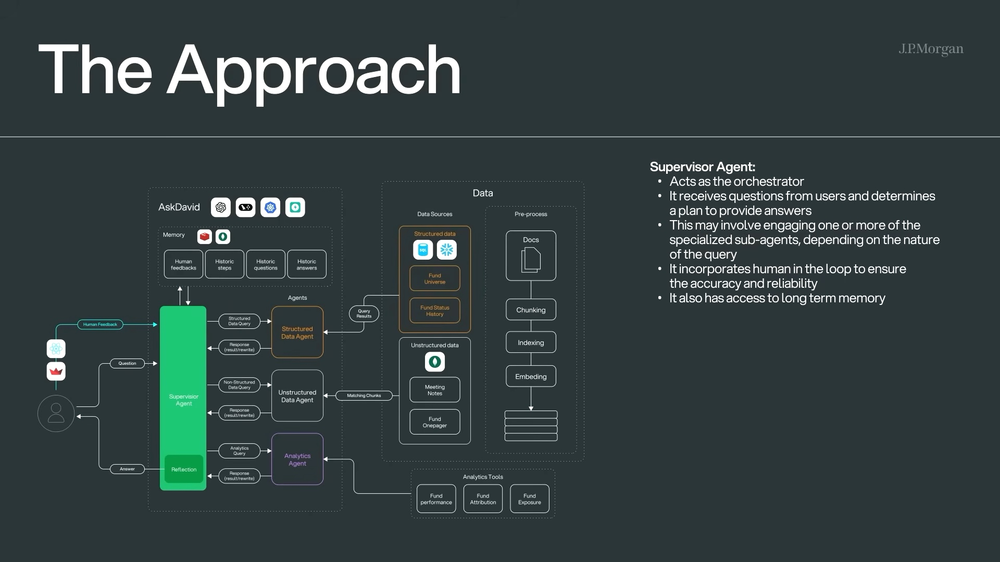
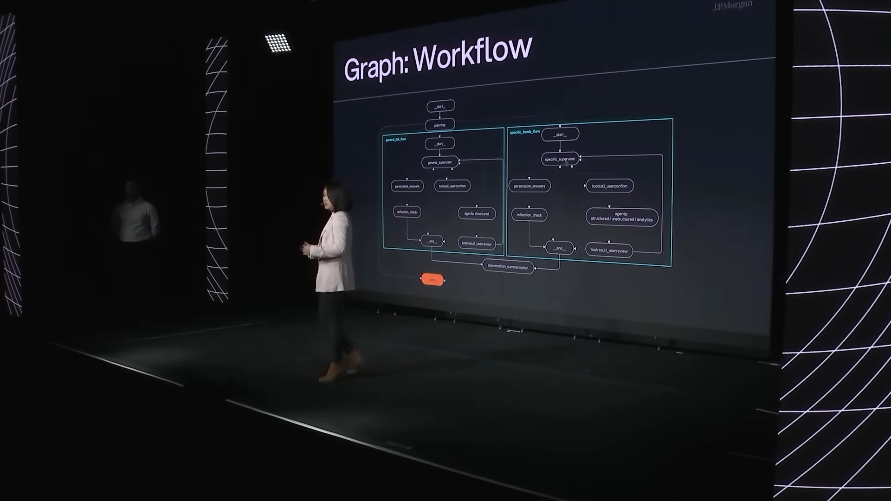
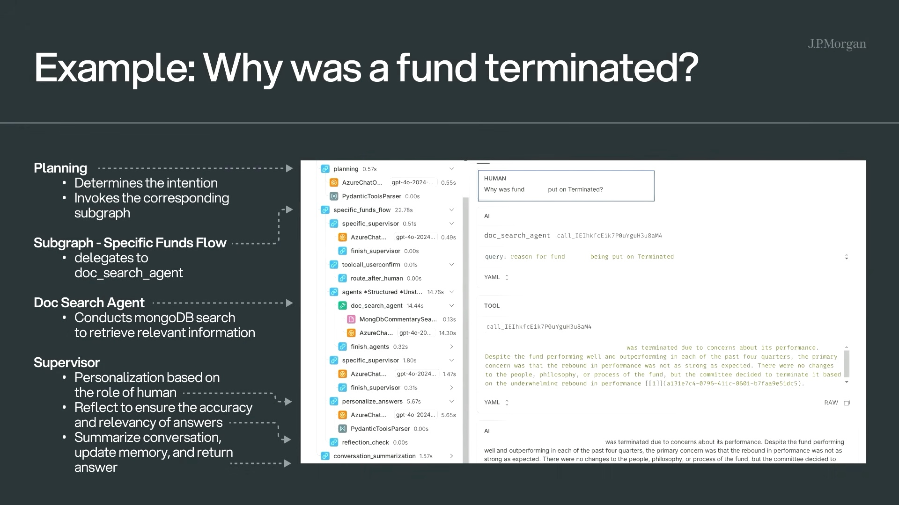
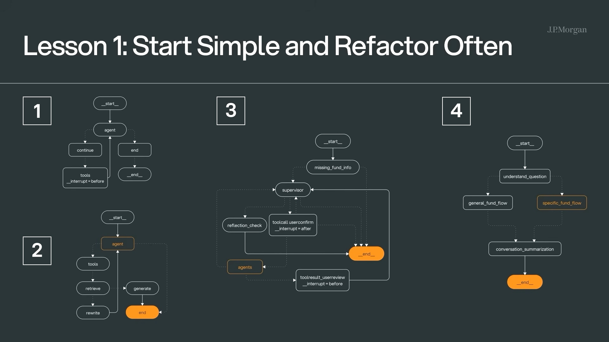
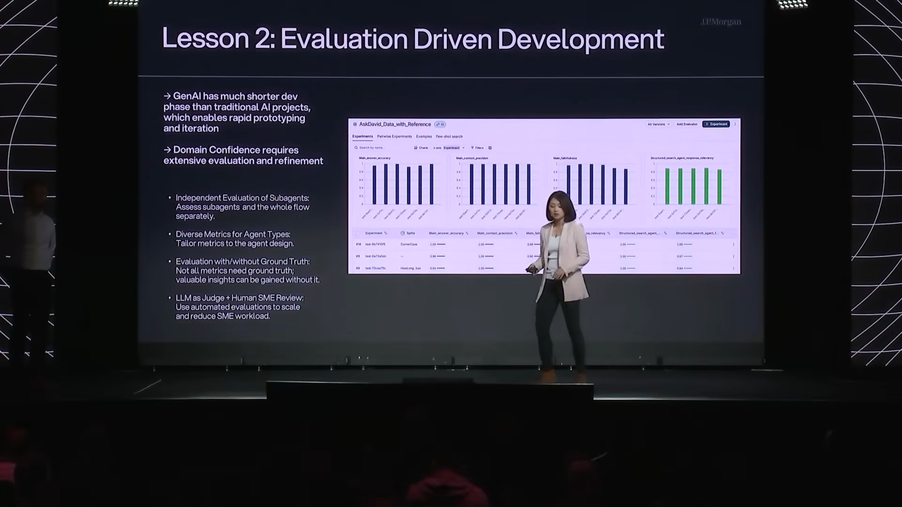
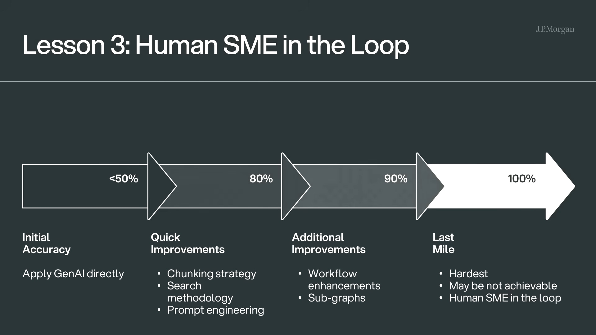

Executive summary
The agent organizes research work; it does not replace accountability
J.P. Morgan Private Bank's investment research team manages lists containing thousands of products backed by years of structured records, documents, and proprietary analytics. Answering a seemingly simple product question can require searching several systems, reconstructing historical context, running analysis, and tailoring the explanation for a particular user. “Ask David” is presented as a way to coordinate that work through one conversational entry point.
Its architecture uses a supervisor to interpret the request and route work to specialized agents for structured data, unstructured documents, and analytics. Separate subgraphs handle general questions and product-specific questions. Retrieved evidence is personalized by user role, checked through a reflection step, summarized, and stored as conversational memory. Human subject-matter experts remain available for difficult or consequential cases.
- Domain boundaries make the system useful. The agents operate over curated investment data, approved document stores, and existing analytical capabilities rather than an unrestricted knowledge space.
- Different evidence requires different execution. SQL/API access, document retrieval, and analytical code are not interchangeable tools and need separate controls and metrics.
- The graph encodes product policy. Routing, personalization, reflection, summarization, and escalation are explicit stages that can be traced and evaluated.
- Evaluation is part of development. The team recommends evaluating each sub-agent independently as well as the full workflow, using metrics suited to the agent's job.
- Human review is a risk control. LLM judging can reduce review load, but the talk still assigns the hardest last mile to human SMEs.
This is a conference presentation of the team's approach and lessons, not an independently audited case study. The talk does not disclose production traffic, exact model versions, complete evaluation datasets, security architecture, or measured business outcomes. Percentage ranges shown near the end are presenter heuristics from their experience, not a universal accuracy curve for enterprise agents.
Business problem
One answer may span records, documents, analysis, and judgment
The team describes three information families. Structured data includes long-running product systems and status histories. Unstructured sources include emails, meeting notes, presentations, audio, and video. Proprietary models and analytics produce performance, attribution, exposure, and visualization that previously required hands-on expert work.
The motivating example is “Why was this fund terminated?” A good response may need the status-change history, committee commentary, performance context, similar products, and an explanation suited to the audience. The acronym DAVID captures the intended scope: Data, Analytics, Visualization, Insights, and Decision-making assistant.
The assistant supports research and decision preparation. The presentation does not establish that it autonomously makes investment decisions or removes human responsibility for advice.
System architecture
A supervisor coordinates three evidence-specialized agents

Structured-data agent
Converts natural language into SQL queries or approved API calls, then uses an LLM to explain returned records. The depicted sources include a fund universe and status history.
Unstructured-data agent
Searches preprocessed, chunked, indexed, and embedded documents through a RAG path. Examples include meeting notes and product one-pagers.
Analytics agent
Calls existing APIs or libraries for simple tasks. More complex analysis can use text-to-code generation under human supervision.
This specialization is valuable because each path has different correctness criteria. A SQL agent needs schema grounding, authorization, read-only execution, and result validation. A RAG agent needs retrieval relevance, evidence coverage, freshness, and citations. An analytics agent needs parameter validation, deterministic calculation checks, and a sandbox for generated code. One generic “accuracy” score cannot diagnose all three.
Graph design
Route intent first, then run a bounded subgraph
The end-to-end graph begins with planning. A general investment question enters one subgraph; a question about a specific fund enters another. Each subgraph has its own supervisor and relevant specialized agents. The answers converge on personalization, reflection, and conversation summarization.

A graph makes the sequence observable, but a visible node is not automatically a control. “Reflection” needs a defined rubric, evidence access, failure threshold, retry limit, and escalation rule. “Human confirmation” needs an identity, decision payload, timeout, and durable resume point. LangGraph's current guidance similarly couples interrupts with checkpointed state so execution can pause and resume reliably.
Worked example
“Why was this fund terminated?” becomes a traceable research path

The same evidence is then rendered differently according to user role. A due-diligence specialist may need the detailed reasoning, supporting history, and caveats; an advisor may need a concise explanation for a client conversation. This is more than changing tone. Role-aware answers should also enforce what data the user may see, how much detail may be disclosed, and which actions or conclusions require review.
The example's reference link is essential. In a high-stakes workflow, the answer should carry source identity, effective date, retrieval timestamp, quoted evidence or stable location, and the transformations applied by analytical tools. The reviewer must be able to reconstruct why the system produced the answer.
Lesson one
Start with one agent, earn complexity through evidence
The final diagram was not the starting architecture. The team describes a progression from a plain ReAct-style loop, to a customized RAG agent, to a supervisor integrating specialized agents, and finally to intent-specific subgraphs. They expanded the graph only after becoming comfortable with the component's performance.

This is the strongest reusable lesson in the talk. A multi-agent architecture should be the result of failure analysis, ownership boundaries, context isolation, or different evaluation needs. If one well-scoped agent plus deterministic workflow steps can solve the task, additional supervisors and handoffs create more routes to test without necessarily improving the answer.
Lesson two
Evaluate components and the full graph separately
The team recommends evaluation-driven development from the first iterations. A main-flow score can hide the weak component that needs work, so each sub-agent should also be measured independently. Metrics should match the job: answer accuracy and groundedness for QA, retrieval quality for RAG, trajectory or tool-selection correctness for agents, and concision for summarization.

Offline evaluation
Curated cases, historical questions, reference answers, expected evidence, expected tools, and adversarial scenarios compare versions before release.
Online evaluation
Production traces monitor failures, unusual routes, unsupported answers, cost, latency, and escalation. Useful failures become future offline test cases.
Deterministic checks
Validate citations, schema, permissions, SQL shape, numeric reconciliation, tool arguments, and required disclosures with code where possible.
Judgment checks
Use calibrated human or LLM reviewers for relevance, clarity, completeness, and faithfulness that cannot be reduced to a simple rule.
It can share blind spots with the generating model and may be sensitive to prompt wording, answer length, or ordering. Calibrate it against blinded SME labels, monitor disagreement, and retain deterministic checks for facts and controls that can be verified directly.
Lesson three
Human expertise owns the uncertain last mile
The final lesson frames quality as a progression: direct use of a general model performs poorly in a specialized domain; retrieval, chunking, search, and prompt improvements produce a large early gain; workflow and subgraph design improve specific question classes; the remaining gap is the hardest and may not be fully automatable.

A production escalation policy should be mechanical enough to audit. Signals may include missing or conflicting evidence, stale data, low retrieval confidence, failed reconciliation, generated code, unusual tool sequences, privileged data, or a request that could influence a client-facing recommendation. The review screen should show the question, proposed answer, citations, tool trace, uncertainty signals, and editable decision, not only an approve button.
Production assessment
What the talk shows and what a financial deployment must add
| Layer | Presented design | Required production control |
|---|---|---|
| Identity | Personalization based on user role | Authenticated identity, entitlement filtering, tenant and field-level access |
| Structured data | Natural language to SQL or API | Read-only credentials, allowlisted schemas, query limits, result validation |
| Documents | Chunk, embed, index, and retrieve | Freshness, document ACL propagation, provenance, versioning, citation coverage |
| Analytics | APIs, libraries, and supervised text-to-code | Sandboxing, package and network restrictions, input validation, numeric reconciliation |
| Reflection | LLM judge retries an answer that does not make sense | Calibrated rubric, retry cap, independent checks, escalation threshold |
| Memory | Short- and long-term memory personalize interactions | Purpose limitation, retention, correction, deletion, permission-aware retrieval |
| Human review | SME consultation when needed | Risk-based routing, durable pause/resume, reviewer identity, reason, SLA, override log |
| Evaluation | Sub-agent and end-to-end metrics | Representative datasets, slices, change gates, online drift, incident feedback loop |
Reusable takeaways
A practical blueprint for domain-specific enterprise agents
- Start from a costly, repeated decision-support workflow and map its evidence sources, expert judgments, and failure costs.
- Build one bounded agent or deterministic graph first. Add specialized agents only when their data, tools, context, owners, or evaluators differ materially.
- Make intent routing, evidence retrieval, personalization, verification, and escalation explicit nodes with typed state.
- Treat citations, permissions, freshness, and tool traces as part of the answer contract, not optional observability metadata.
- Evaluate each component and the end-to-end task. Use code checks for deterministic invariants and calibrated judgment for semantic qualities.
- Define the human review policy before deployment: which signals pause the graph, who can approve, what evidence they receive, and how the decision becomes future evaluation data.
The presentation's closing summary remains useful: iterate fast, evaluate early, and keep human SMEs in the loop. The production version adds one more clause: preserve enough evidence and state to prove what happened.
Video guide
Jump to each part of the presentation
- The research-team problem
- Ask David's product vision
- Structured, unstructured, and analytical knowledge
- The fund-termination question
- Supervisor and specialized agents
- General and specific-fund subgraphs
- Worked research example
- Start simple and refactor
- Evaluation-driven development
- Human SMEs and the last mile
Sources and limitations
What this article is based on
- LangChain Interrupt: How J.P. Morgan Built an AI Agent for Investment Research with LangGraph — architecture, demonstration, lessons, and auto-generated English captions.
- LangGraph: Thinking in LangGraph — state, subgraphs, checkpointed interrupts, retries, and human-in-the-loop workflow design.
- LangSmith: Evaluation types — offline and online evaluation, deterministic and judgment evaluators, and the production feedback loop.
- LangSmith: LLM-as-a-judge online evaluators — scalable judgment evaluation and production-trace sampling.
- LangChain and LangGraph learning guides — current multi-agent, RAG, SQL, memory, and graph patterns.
Captions are automatically generated and contain transcription errors, including “fund” being rendered as “font” in places. The article corrects these where context is unambiguous. Screenshots are direct 1920×1080 source frames. No private J.P. Morgan data, code, evaluation set, system prompt, or deployment was available; no investment claim or system-performance claim was independently reproduced.